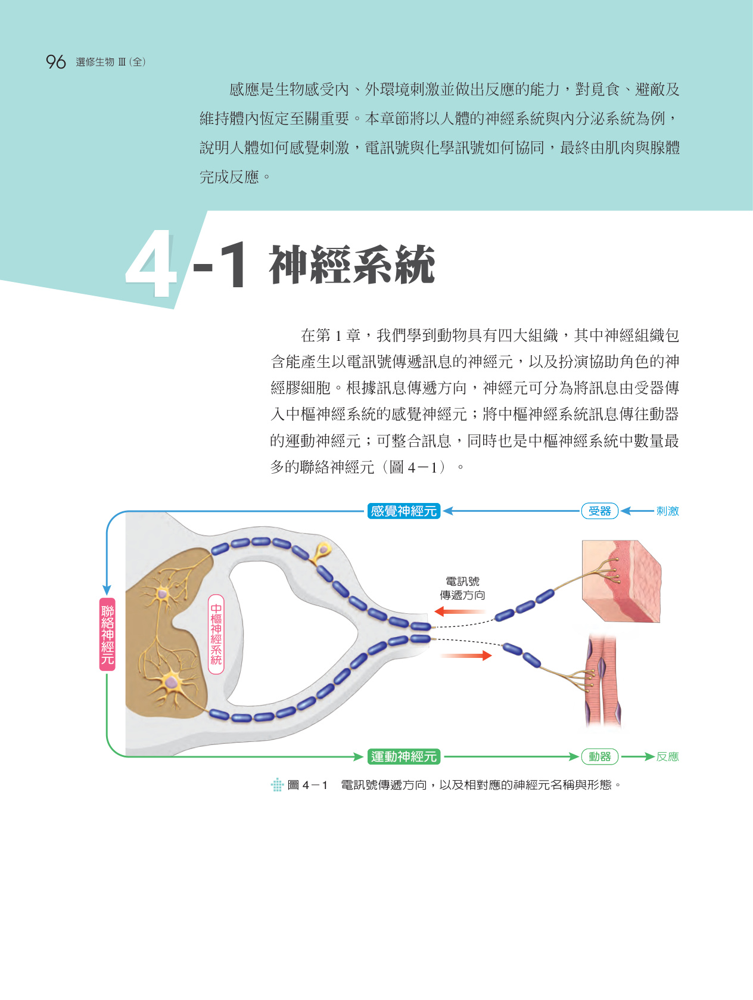
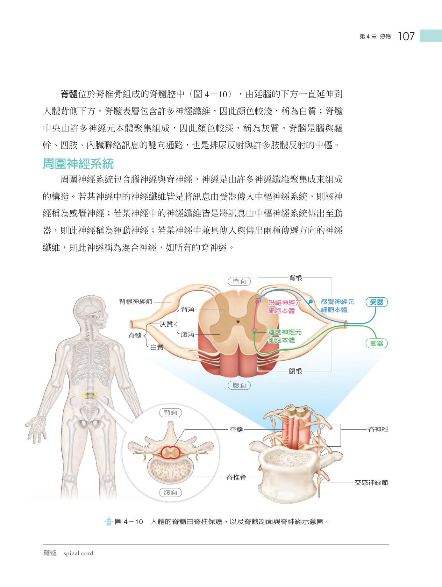
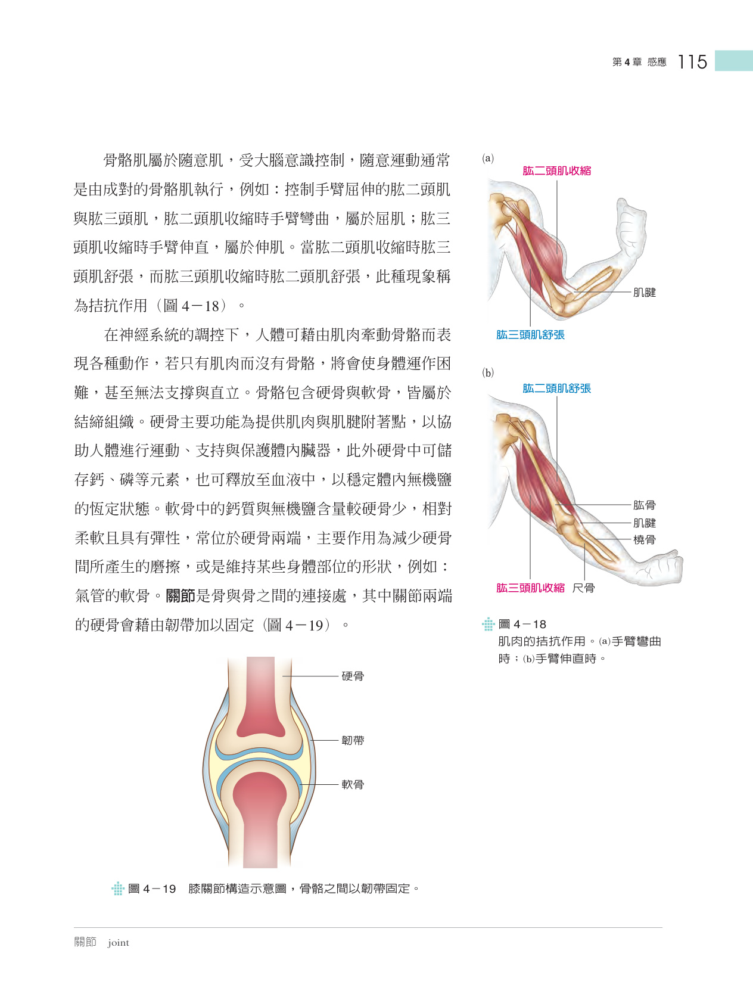
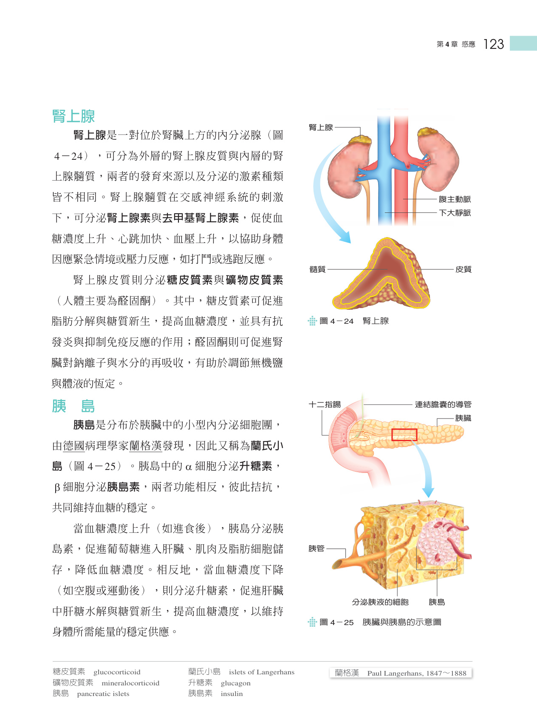
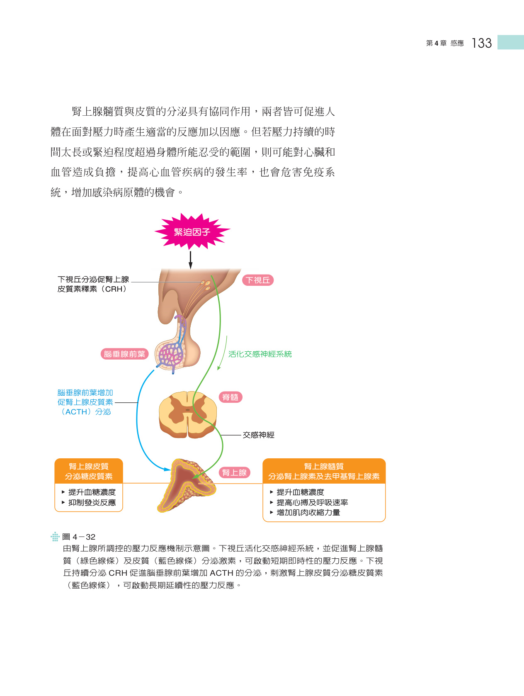

從動作電位產生與突觸傳遞、各類感覺受器感知，到肌肉滑動學說及下視丘-腦下腺軸線的荷爾蒙調控，完整理解體內精準訊息網絡。

解析神經元靜止膜電位、動作電位全有全無律、神經傳導物質釋放與大腦脊髓中樞反射。

探討視覺視網膜光受器、聽覺耳蝸毛細胞、平衡覺前庭及化學受器（味覺嗅覺）之訊息轉換。

解析骨骼肌肌節構造、肌動蛋白與肌原纖維滑動學說、鈣離子調控機制及關節運動槓桿。

系統整合下視丘、腦垂腺、甲狀腺、腎上腺、胰臟胰島與生殖腺之荷爾蒙反饋調控網絡。

實作解剖或模型觀察骨骼肌肉關節槓桿運動，探討拮抗肌肌群協同收縮原理。